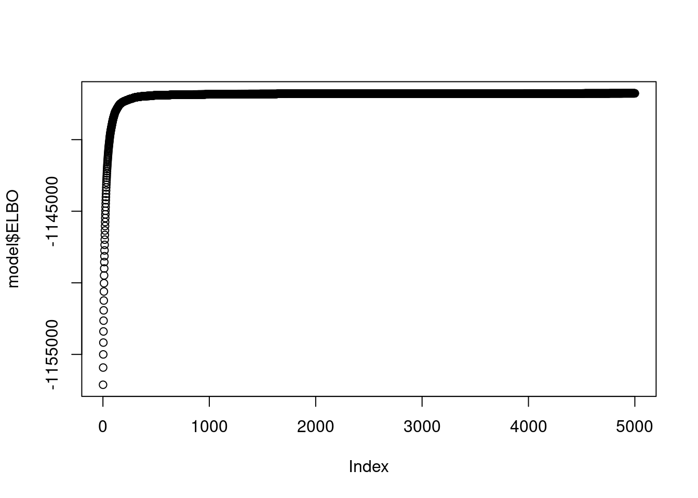
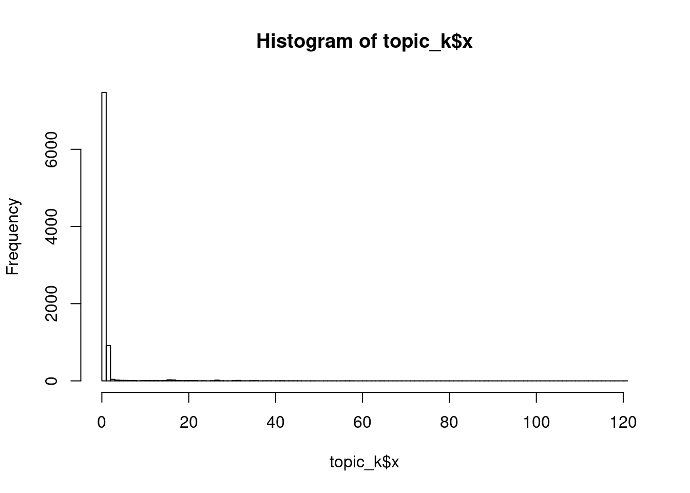

Last updated: 2020-09-27
workflowr checks: (Click a bullet for more information) ✔ R Markdown file: up-to-date
Great! Since the R Markdown file has been committed to the Git repository, you know the exact version of the code that produced these results.
✔ Environment: empty
Great job! The global environment was empty. Objects defined in the global environment can affect the analysis in your R Markdown file in unknown ways. For reproduciblity it’s best to always run the code in an empty environment.
✔ Seed:
set.seed(20200511)
The command set.seed(20200511) was run prior to running the code in the R Markdown file. Setting a seed ensures that any results that rely on randomness, e.g. subsampling or permutations, are reproducible.
✔ Session information: recorded
Great job! Recording the operating system, R version, and package versions is critical for reproducibility.
✔ Repository version: 3f7950a
wflow_publish or wflow_git_commit). workflowr only checks the R Markdown file, but you know if there are other scripts or data files that it depends on. Below is the status of the Git repository when the results were generated:
Ignored files:
Ignored: .Rproj.user/
Untracked files:
Untracked: data/SLA/SLA_preprocessed_minzhe.RData
Untracked: data/SLA/docword.sla_minzhe.txt
Untracked: data/SLA/vocab.sla_minzhe.txt
Untracked: output/SLA/
Untracked: output/uci_BoW/v0.4.2/kos_ebpmf_wbg_initLF50_K100_maxiter3000.Rds
Untracked: script/fit_sla_ebpmf_wbg.sbatch
Untracked: script/fit_sla_ebpmf_wbg2.sbatch
Untracked: script/fit_sla_ebpmf_wbg3.sbatch
Untracked: script/fit_sla_ebpmf_wbg4.sbatch
Untracked: script/fit_sla_ebpmf_wbg5.sbatch
Untracked: script/fit_sla_ebpmf_wbg6.sbatch
Untracked: script/fit_sla_pmf.sbatch
Untracked: script/fit_sla_pmf2.sbatch
Untracked: script/fit_sla_pmf3.sbatch
Untracked: script/fit_sla_pmf4.sbatch
Untracked: script/fit_sla_pmf5.sbatch
Untracked: script/fit_sla_pmf6.sbatch
Untracked: script/fit_sla_pmf_initialization.R
Untracked: script/fit_uci_BoW_ebpmf_bg.sbatch
Untracked: script/fit_uci_BoW_ebpmf_bg2.sbatch
Untracked: script/fit_uci_BoW_ebpmf_bg3.sbatch
Untracked: script/fit_uci_BoW_ebpmf_bg_initLF.sbatch
Untracked: script/fit_uci_BoW_ebpmf_wbg_initL.sbatch
Untracked: script/fit_uci_BoW_ebpmf_wbg_initL2.sbatch
Untracked: script/fit_uci_BoW_ebpmf_wbg_initL3.sbatch
Untracked: script/fit_uci_BoW_ebpmf_wbg_initLF.sbatch
Untracked: script/fit_uci_BoW_ebpmf_wbg_initLF2.sbatch
Untracked: script/fit_uci_BoW_ebpmf_wbg_initLF3.sbatch
Untracked: script/fit_uci_BoW_pmf_initLF.sbatch
Untracked: script/fit_uci_BoW_pmf_initLF2.sbatch
Untracked: script/fit_uci_BoW_pmf_initLF3.sbatch
Untracked: script/slurm-5403681.out
Untracked: script/slurm-5404401.out
Untracked: script/slurm-5404403.out
Untracked: script/slurm-5435873.out
Untracked: script/slurm-5435932.out
Untracked: script/slurm-5436391.out
Untracked: script/slurm-5495928.out
Untracked: script/slurm-5496034.out
Untracked: script/slurm-5496062.out
Untracked: script/slurm-5496165.out
Untracked: script/slurm-5496171.out
Untracked: script/slurm-5496173.out
Unstaged changes:
Modified: script/fit_sla_ebpmf_wbg_initLF.R
Modified: script/fit_sla_pmf_initLF.R
| File | Version | Author | Date | Message |
|---|---|---|---|---|
| Rmd | 3f7950a | Zihao | 2020-09-27 | prelim analysis sla k 10 |
I applied topic modeling to SLA dataset. let’s see the results.
model = readRDS("/project2/mstephens/zihao/ebpmf_data_analysis/output/SLA/v0.4.5/sla_ebpmf_wbg_initLF50_K10_maxiter5000.Rds")
doi = readLines("/project2/mstephens/zihao/ebpmf_data_analysis/data/SLA/doi.sla.txt")
vocab = readLines("/project2/mstephens/zihao/ebpmf_data_analysis/data/SLA/vocab.sla.txt")
title = readLines("/project2/mstephens/zihao/ebpmf_data_analysis/data/SLA/title.sla.txt")
abs = readLines("/project2/mstephens/zihao/ebpmf_data_analysis/data/SLA/abs.sla.txt")plot(model$ELBO)
L = model$qg$qls_mean
F = model$qg$qfs_mean
k = 5
topic_k = sort(F[,k], decreasing = TRUE, index.return=TRUE)
hist(topic_k$x, breaks = 100)
vocab[topic_k$ix[1:10]] [1] "additive" "curves" "spline"
[4] "principal" "splines" "predictors"
[7] "varyingcoefficient" "trajectories" "dimensionreduction"
[10] "eigenvalues" ## see documents with most weights in that topic
doc_weight_k = sort(L[,k], decreasing = TRUE, index.return=TRUE)
abs[doc_weight_k$ix[1:5]][1] "Modern graphical tools have enhanced our ability-to learn many things from data directly. In recent years, dimension reduction has proven to be an effective tool for generating low-dimensional summary plots without appreciable loss of information. Some well-known inverse regression methods for dimension reduction such as sliced inverse regression (Li; 1991) and sliced average variance estimation (Cook & Weisberg, 1991) have been developed to estimate summary plots for regression and discriminant analysis; In this paper, we suggest a new method that makes use of inverse third moments. This method can find structure beyond that found by sliced inverse regression and sliced average variance estimation, particularly regression mixtures. Illustrative examples are presented."
[2] "With modem technology development, functional data are being observed frequently in many scientific fields. A popular method for analyzing such functional data is '' smoothing first, then estimation.'' That is, statistical inference such as estimation and hypothesis testing about functional data is conducted based on the substitution of the underlying individual functions by their reconstructions obtained by one smoothing technique or another. However, little is known about this substitution effect on functional data analysis. In this paper this problem is investigated when the local polynomial kernel (LPK) smoothing technique is used for individual function reconstructions. We find that under some mild conditions, the substitution effect can be ignored asymptotically. Based on this, we construct LPK reconstruction-based estimators for the mean, covariance and noise variance functions of a functional data set and derive their asymptotics. We also propose a GCV rule for selecting good bandwidths for the LPK reconstructions. When the mean function also depends on some time-independent covariates, we consider a functional linear model where the mean function is linearly related to the covariates but the covariate effects are functions of time. The LPK reconstruction-based estimators for the covariate effects and the covariance function are also constructed and their asymptotics are derived. Moreover, we propose a L-2- norm-based global test statistic for a general hypothesis testing problem about the covariate effects and derive its asymptotic random expression. The effect of the bandwidths selected by the proposed GCV rule on the accuracy of the LPK reconstructions and the mean function estimator is investigated via a simulation study. The proposed methodologies are illustrated via an application to a real functional data set collected in climatology."
[3] "This paper provides ANOVA inference for nonparametric local polynomial regression (LPR) in analogy with ANOVA tools for the classical linear regression model. A surprisingly simple and exact local ANOVA decomposition is established, and a local R-squared quantity is defined to measure the proportion of local variation explained by fitting LPR. A global ANOVA decomposition is obtained by integrating local counterparts, and a global R-squared and a symmetric projection matrix are defined. We show that the proposed projection matrix is asymptotically idempotent and asymptotically orthogonal to its complement, naturally leading to an F-test for testing for no effect. A by-product result is that the asymptotic bias of the \"projected\" response based on local linear regression is of quartic order of the bandwidth. Numerical results illustrate the behaviors of the proposed R-squared and F-test. The ANOVA methodology is also extended to varying coefficient models."
[4] "We propose an iterative estimation procedure for performing functional principal component analysis. The procedure aims at functional or longitudinal data where the repeated measurements from the same subject are correlated. An increasingly popular smoothing approach, penalized spline regression, is used to represent the mean function. This allows straightforward incorporation of covariates and simple implementation of approximate inference procedures for coefficients. For the handling of the within-subject correlation, we develop an iterative procedure which reduces the dependence between the repeated measurements that are made for the same subject. The resulting data after iteration are theoretically shown to be asymptotically equivalent (in probability) to a set of independent data. This suggests that the general theory of penalized spline regression that has been developed for independent data can also be applied to functional data. The effectiveness of the proposed procedure is demonstrated via a simulation study and an application to yeast cell cycle gene expression data."
[5] "Representation of generalized additive models (GAM's) using penalized regression splines allows GAM's to be employed in a straightforward manner using penalized regression methods. Not only is inference facilitated by this approach, but it is also possible to integrate model selection in the form of smoothing parameter selection into model fitting in a computationally efficient manner using well founded criteria such as generalized cross-validation. The current fitting and smoothing parameter selection methods for such models are usually effective, but do not provide the level of numerical stability to which users of linear regression packages, for example, are accustomed. In particular the existing methods cannot deal adequately with numerical rank deficiency of the GAM fitting problem, and it is not straightforward to produce methods that can do so, given that the degree of rank deficiency can be smoothing parameter dependent. In addition, models with the potential flexibility of GAM's can also present practical fitting difficulties as a result of indeterminacy in the model likelihood: Data with many zeros fitted by a model with a log link are a good example. In this article it is proposed that GAM's with a ridge penalty provide a practical solution in such circumstances, and a multiple smoothing parameter selection method suitable for use in the presence of such a penalty is developed. The method is based on the pivoted QR decomposition and the singular value decomposition, so that with or without a ridge penalty it has good error propagation properties and is capable of detecting and coping elegantly with numerical rank deficiency. The method also allows mixtures of user specified and estimated smoothing parameters and the setting of lower bounds on smoothing parameters. In terms of computational efficiency, the method compares well with existing methods. A simulation study compares the method to existing methods, including treating GAM's as mixed models."sessionInfo()R version 3.5.1 (2018-07-02)
Platform: x86_64-pc-linux-gnu (64-bit)
Running under: Scientific Linux 7.4 (Nitrogen)
Matrix products: default
BLAS/LAPACK: /software/openblas-0.2.19-el7-x86_64/lib/libopenblas_haswellp-r0.2.19.so
locale:
[1] LC_CTYPE=en_US.UTF-8 LC_NUMERIC=C
[3] LC_TIME=en_US.UTF-8 LC_COLLATE=en_US.UTF-8
[5] LC_MONETARY=en_US.UTF-8 LC_MESSAGES=en_US.UTF-8
[7] LC_PAPER=en_US.UTF-8 LC_NAME=C
[9] LC_ADDRESS=C LC_TELEPHONE=C
[11] LC_MEASUREMENT=en_US.UTF-8 LC_IDENTIFICATION=C
attached base packages:
[1] stats graphics grDevices utils datasets methods base
loaded via a namespace (and not attached):
[1] workflowr_1.1.1 Rcpp_1.0.2 digest_0.6.22
[4] rprojroot_1.3-2 R.methodsS3_1.7.1 backports_1.1.5
[7] magrittr_1.5 git2r_0.26.1 evaluate_0.14
[10] stringi_1.4.3 whisker_0.4 R.oo_1.22.0
[13] R.utils_2.7.0 rmarkdown_1.10 tools_3.5.1
[16] stringr_1.4.0 yaml_2.2.0 compiler_3.5.1
[19] htmltools_0.3.6 knitr_1.20 This reproducible R Markdown analysis was created with workflowr 1.1.1